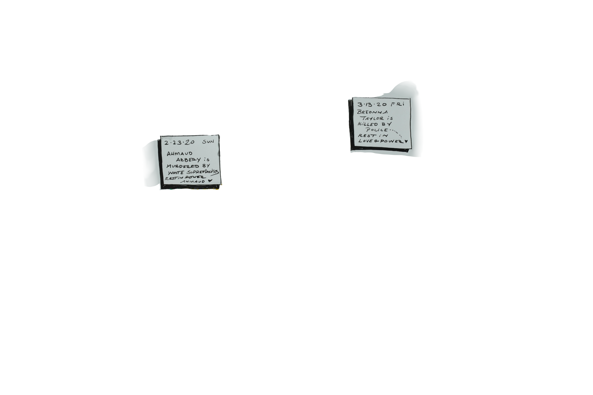
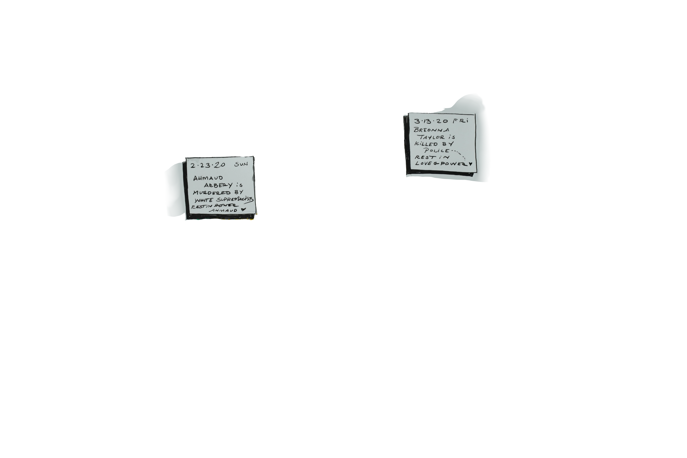

How are you feeling?

Hi, how are you doing?
A few years ago, when someone would ask me how I was doing, I would almost always respond with one of these 3 options.
I didn't think there was much more to say.
But then that started to change.
Feelings I had never noticed before (or maybe just avoided) started to say WE ARE NOT OKAY.
And started to manifest in the form of panic attacks, self harm, depression & anxiety.
So I got my butt into therapy (where they don't let you off the hook with answers like this...).

My thrapist suggested I use a feelings wheel to help improve my "emotional vocabulary."
I could choose words from the wheel to be more specific about how I was feeling and give that feeling a name.

Here, you try...
What do you mean by ok?
This kind of specificity of emotional vocabulary is what Susan David calls "emotional granularity." When we can identify what we're feeling, we can identify what our body is telling us it needs. Pretty cool, eh?
The other thing I thought was interesting about the wheel was that it organized the feelings by color and category. Although I didn't quite like the colors and categories on the wheels I found...
Colors can have very strong emotional associations - but they're different for everyone.
You're feeling guilty - what color is it? (pick purple)
I started to do this every day - I'd write the words I was feeling and the color I associated with that feeling...

I found a lot of my associations lined up with the colors & character designs from "Inside Out" - and studied their process.

It turns out, most scientists agree, there are at least 5 core emotions that track back to the way our bodies intuitively communicate our needs before we have language.

So I kept up my practice - and started to also track how each feeling showed up in my body and facial expressions.
I found some patterns in how the colors I was using lined up with how & where the feelings showed up in my body.

Ok, so that's how feelings show up in my body/nervous system... how do they show up in yours?
Where do you feel frustration?

Brené Brown says there are as many theories on emotions as there are emotions researchers - which seems right to me.
And while I'm more of an artist than a researcher, this work has helped me very deeply.
I ended up turning all of this into my own emotion wheel, and have used the words, the colors, and the somatic mapping to build a more visual vocabulary to understand and express how I'm doing each day and what I maybe needing to experience more joy (satisfied needs) in my life.


 



I started to expore my gender identity and expression (I'm trans turns out...)


I started using new pronouns, and expressiong myself and my gender more authentically.

I used it to make sense of tough moments in my family.

I had a lot more panic attacks...

In difficult moments, I had learned how to pause... and ask what word is this? What color is this? Where is which feelings manifesting? What is my body telling me it needs?


When I can identify my feelings, I can identify my needs. When I can identify my needs, I can take care of myself or ask those who care for me to help.

Final thought, still tbd.